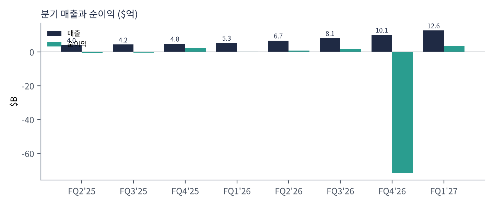
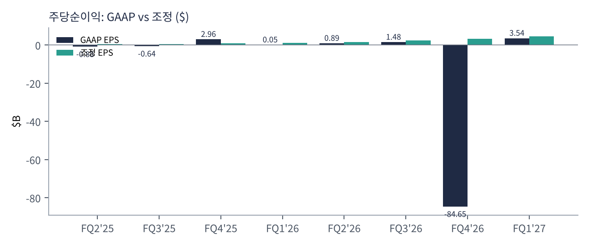
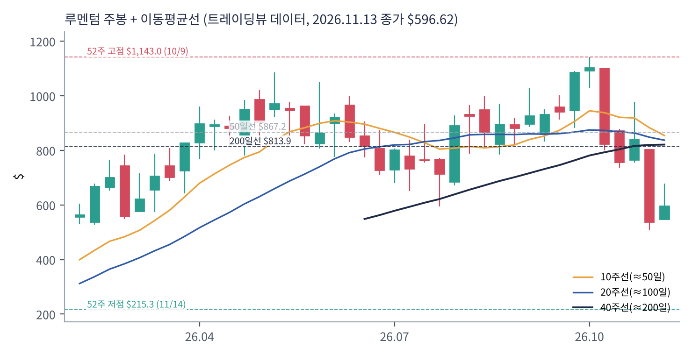
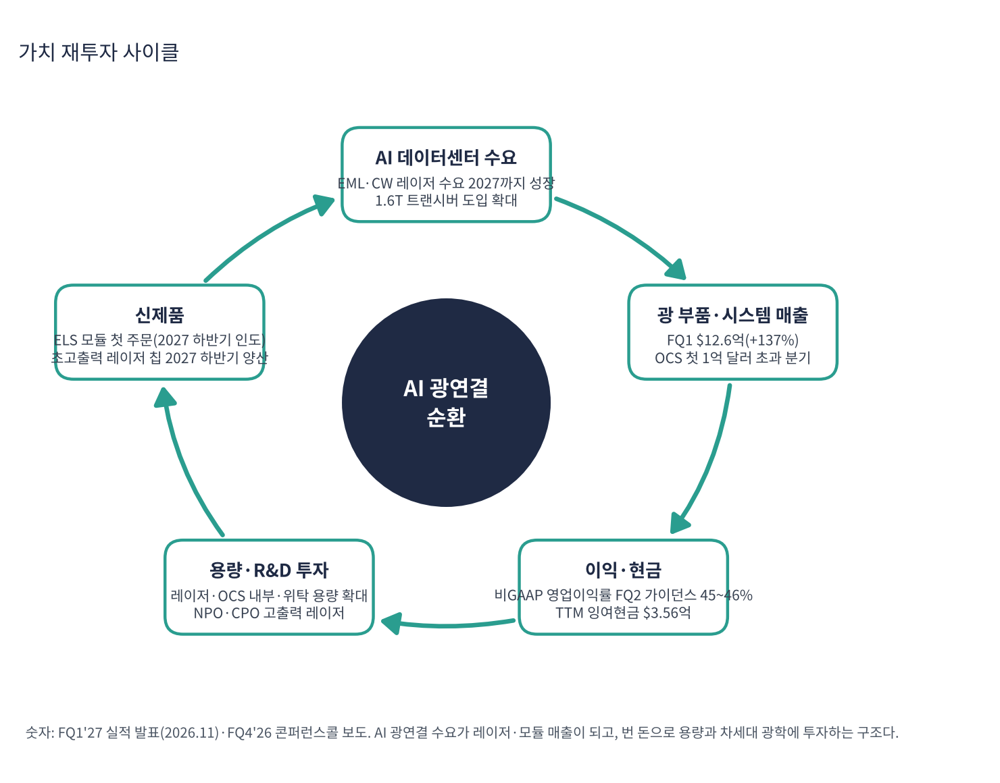

루멘텀은 AI 데이터센터용 레이저 칩, 광 트랜시버, 광 회로 스위치(OCS)를 만드는 광통신 회사다. 매출이 3배 이상 늘고 이익률이 급격히 올라갔지만, GAAP 순이익이 일회성 비용으로 크게 왜곡돼 PEG를 조정 EPS로 봐야 하는 회사다.
| 항목 | 내용 |
|---|---|
| 종목 | Lumentum (LITE) · NASDAQ · 광통신 · 캘리포니아 새너제이 |
| 멀티플 | PER 산출 불가(GAAP TTM 적자) · P/S 16.97배 (11/13 종가 $596.62) |
| 최근 분기(FQ1'27, 9월 말) | 매출 $12.6억(+137%), GAAP EPS $3.54, 비GAAP EPS $4.57, GAAP 영업이익률 28.5% |
| 가이던스(FQ2'27) | 매출 $15.75~16.25억, 비GAAP 영업이익률 45~46%, 비GAAP EPS $5.90~6.20 |
| 현금·부채 | 스캐너: 현금 $19.8억, 총차입금 $14.3억, TTM 잉여현금 $3.56억 |
| 직책 | 인물 | 역할·특징 |
|---|---|---|
| 사장·CEO | 마이클 헐스턴 | AI 수요에 맞춰 레이저·OCS·모듈 용량을 늘리는 중 |
| CFO | 와지드 알리 | 가이던스·영업이익률 관리 |
경영 스타일: '가장 병목인 레이저 칩 용량을 먼저 키우고 신제품(OCS·NPO)을 얹는다'. 회사는 FQ1에 목표 재무모델에 한 분기 이상 앞서 도달했다고 설명했다. 레이저 공급이 빡빡해 내부·위탁 생산 용량을 늘리고 있다.
EML 레이저 칩(200G 비중 25% 이상), 광 회로 스위치, 클라우드 트랜시버. NPO·CPO용 초고출력 레이저.
AI 연산 속도와 대역폭이 커질수록 광 연결이 늘어난다는 논리다. NPO는 레이저 시장을 넓히는 추가 기회라고 설명한다.
다음 실적발표(FQ2'27)는 세 가지 질문에 답하는 자리다.
질문 1. 가이던스($15.75~16.25억)를 넘으며 성장이 이어지는가?
| 확인할 숫자 | 좋아지면 | 나빠지면 |
|---|---|---|
| FQ2 매출 $15.75~16.25억, 비GAAP EPS $5.90~6.20, 영업이익률 45~46% | 가이던스 이상이면 ②매출 고리가 유지된다 | 하단 미달이면 공급 제약이 성장 병목임을 뜻한다 |
질문 2. OCS·1.6T 등 신제품이 매출로 붙는가?
| 확인할 숫자 | 좋아지면 | 나빠지면 |
|---|---|---|
| FQ1 OCS 1억 달러 초과(회사 기대), 1.6T 도입 확대 | OCS 매출이 확대되면 ②고리의 신규 축이 확인된다 | 정체이면 레이저 의존이 커진다 |
질문 3. 현금이 유지되는가(전환사채·용량 투자)?
| 확인할 숫자 | 좋아지면 | 나빠지면 |
|---|---|---|
| 현금성 $20억(분기 -$7.59억), TTM 잉여현금 $3.56억 | 현금 감소가 멈추면 ④투자 고리의 부담이 줄어든다 | 감소가 계속되면 투자 부담이 커진다 |
한 줄 판정 규칙: 첫 질문이 가이던스 이상이면 약한 고리(공급 제약·고객 집중)가 풀리고, 현금이 계속 줄면 사이클의 재투자 고리 부담이 커진다.
일정: 2027-02-11 예정(트레이딩뷰 일정, 회사 확정 확인 필요).
| 분기 | 매출 | 순이익 | EPS | 조정 EPS | 특이 사항 |
|---|---|---|---|---|---|
| FQ2'25(24.12) | $4.0억 | $-0.6억 | -0.88 | 0.42 | |
| FQ3'25(25.3) | $4.2억 | $-0.4억 | -0.64 | 0.57 | |
| FQ4'25(25.6) | $4.8억 | $2.1억 | 2.96 | 0.88 | |
| FQ1'26(25.9) | $5.3억 | $0.0억 | 0.05 | 1.10 | |
| FQ2'26(25.12) | $6.7억 | $0.8억 | 0.89 | 1.67 | |
| FQ3'26(26.3) | $8.1억 | $1.4억 | 1.48 | 2.37 | |
| FQ4'26(26.6) | $10.1억 | $-71.6억 | -84.65 | 3.23 | GAAP 순손실 $71.6억(전환사채 일부 전환 관련 비현금 비용 약 $78억) |
| FQ1'27(26.9) | $12.6억 | $3.6억 | 3.54 | 4.57 | GAAP 순이익 $3.60억, 비GAAP EPS $4.57 |


값은 트레이딩뷰 스캐너 분기 이력이다. 조정 EPS는 트레이딩뷰 Reported(비GAAP)다. FQ4'26 GAAP 순손실 $71.6억은 전환사채 일부 전환과 관련한 일회성·비현금 비용 약 $78억 때문이다(회사 발표 보도). 분기 설비투자는 구하지 못했다.
흐름 요약: 매출이 FQ2'25 $4.0억에서 FQ1'27 $12.6억으로 3배 이상 늘었다. 조정 EPS가 $0.42에서 $4.57로 올랐고 GAAP은 FQ4'26만 일회성으로 크게 적자였다.
| 항목 | 값 | 비고 |
|---|---|---|
| FQ4'26 매출 구성 | 시스템 35.5% / 부품 64.5% | FQ4'26(회사) |
| FQ4 성장률 | 부품 +103% / 시스템 +123% | 전년 동기 대비 |
| OCS | FQ1 첫 1억 달러 초과 분기(기대) | FQ3→FQ4 출하 2배 |
| EML | 200G 제품 비중 25% 이상 | 레이저 칩 기록 분기 |
레이저 칩·클라우드 모듈·OCS 모두 성장한다. FQ1'27 구성 비율은 이번에 구하지 못했다.
루멘텀은 'AI 광 연결의 핵심 부품(레이저·스위치·모듈) 공급자가 되는 것'을 목표로 한다.
| 축 | 최근 움직임 |
|---|---|
| 부품 | EML·CW 레이저 칩 용량 확대 |
| 시스템 | OCS·클라우드 트랜시버(1.6T) |
| 미래 | NPO·CPO, ELS 모듈 첫 주문(2027 하반기 인도) |

| 이동평균 | 값 | 종가 대비 | 해석 |
|---|---|---|---|
| 5일선 | $610.21 | -2.2% | 현재가가 아래 |
| 20일선 | $723.28 | -17.5% | 현재가가 아래 |
| 50일선 | $867.23 | -31.2% | 현재가가 아래 |
| 100일선 | $841.62 | -29.1% | 현재가가 아래 |
| 200일선 | $813.88 | -26.7% | 현재가가 아래 (-27%) |
주봉 흐름: 52주 고점 $1,143.00(10/9), 52주 저점 $215.35(11/14). 현재가 $596.62는 200일선 $813.88보다 아래, 50일선 $867.23보다 아래에 있다.
| 규칙 | 기준 | 현재 값 | 신호 |
|---|---|---|---|
| 장기 추세 필터 | 종가 vs 200일선 | $596.62 < $813.88 | 매도 |
| 중장기 교차 | 50일선 vs 200일선 | $867.23 > $813.88 | 매수 |
| 단기 교차 | 20일선 vs 50일선 | $723.28 < $867.23 | 매도 |
| 돈키언 채널 | 55일 고가 $1,143.00 / 저가 $506.69 | 중간값 $824.85 아래 | 매도 |
| 1개월 모멘텀 | 21거래일 수익률 | -31.4% (기준 $869.54) | 매도 |
| 3개월 모멘텀 | 63거래일 수익률 | -38.4% (기준 $968.90) | 매도 |
| 6개월 모멘텀 | 126거래일 수익률 | -38.5% (기준 $970.70) | 매도 |
| 12개월 모멘텀 | 252거래일 수익률 | +135.1% (기준 $253.81) | 매수 |
| 종합 (8개 평균) | -0.50 | 매도 우위 |
해석: 8개 신호 중 매수 2개, 매도 6개(점수 -0.50, 매도 우위)다. 14일 ATR $79.58 (13.3%).
| 가격·조건 | 무엇이 바뀌나 | 의미 |
|---|---|---|
| $813.88 돌파 | 200일선 | 매도 → 매수 |
| 20일선이 50일선 위로 | 20/50 교차 | 매도 → 매수 |
| $824.85 돌파 | 돈키언 중간값 | 매도 → 매수 |
| $869.54 돌파 | 1개월 기준가 | 매도 → 매수 |
| $968.90 돌파 | 3개월 기준가 | 매도 → 매수 |
| 50일선이 200일선 위로 | 50/200 교차 | 이탈하면 매수 → 매도 |
| $253.81 돌파 | 12개월 기준가 | 이탈하면 매수 → 매도 |
| 구분 | 가격대 | 근거 |
|---|---|---|
| 저항 1 | $610.21 | 5일선 |
| 저항 2 | $723.28 | 20일선 |
| 지지 1 | $506.69 | 55일 저점 |
| 지지 2 | $215.35 | 52주 저점 |
점수는 -0.50(매도 우위)다. 14일 ATR은 $79.58로 현재가의 13.3%다. 가까운 저항 $610.21을 종가로 넘는지와 가까운 지지 $506.69를 지키는지가 신호 전환의 기준이다. (내 가정, 매매 권유 아님)
| 악재 요인 | 내용 | 강도 |
|---|---|---|
| GAAP 왜곡 | FQ4'26 순손실 $71.6억(일회성 비현금 약 $78억) | 중간 |
| 공급 제약 | 레이저 공급이 빡빡해 매출이 용량에 좌우됨 | 중간 |
| 현금 감소 | FQ1 현금성 -$7.59억(전환 영향) | 중간 |
| 밸류에이션 | 조정 PER 약 50배, P/S 17배 | 높음 |
| 티커 | 회사 | PER(TTM) | PEG | P/S | EPS 성장(YoY) |
|---|---|---|---|---|---|
| LITE | 루멘텀 | 50.4배 | 0.17 | 16.97배 | +299% |
| CIEN | 시에나 | 62.6배 | 0.18 | 7.13배 | +363% |
| COHR | 코히런트 | 45.2배 | 0.08 | 5.93배 | +596% |
| CRDO | 크레도 | 46.9배 | 0.16 | 17.08배 | +312% |
| ALAB | 아스테라 랩스 | 88.0배 | 0.73 | 26.94배 | +124% |
| AVGO | 브로드컴 | 44.3배 | 0.46 | 19.98배 | +100% |
LITE 첫 행 PER·PEG·성장률은 조정 EPS 기준 내 계산이다(기저효과 큼). 동종 PEG는 트레이딩뷰 값이며 대부분 기저효과가 크다.
루멘텀은 현금성 자산 $19.8억이 총차입금 $14.3억보다 커 순현금 약 $5.5억이다. 현금은 FQ1에 $7.59억 줄었는데 전환사채 전환·투자 영향이 크다(회사).
| 지표 | 값 | 계산·출처 | 해석 |
|---|---|---|---|
| 현금 | $19.8억 | 스캐너 | FQ4 말 $27.0억에서 감소 |
| 총차입금 | $14.3억 | 스캐너 | 순현금 약 $5.5억(내 계산) |
| TTM 잉여현금흐름 | $3.56억 | 스캐너 | TTM 매출 $37.4억 대비 약 9.5%(내 계산) |
| TTM EBITDA | $11.6억 | 스캐너 | TTM 매출 대비 약 30.9%(내 계산) |
| 기준 | 값 | 비고 |
|---|---|---|
| P/S (TTM) | 16.97배 | 스캐너 |
| 동종 | CIEN 7.1, COHR 5.9, CRDO 17.1, ALAB 26.9, AVGO 20.0 | 11/13 스캐너 |
해석: P/S 17배는 광 연결 동종 중 CRDO와 비슷하고 COHR·CIEN보다 높다. TTM 매출 대비 이익이 빠르게 커지는 중이라 P/S는 보조 지표다.
| 지표 | 값 | 판정 |
|---|---|---|
| PER (GAAP TTM) | 산출 불가 | FQ4'26 GAAP 순손실 포함 |
| PER (조정 TTM) | 약 50.4배 | $596.62 ÷ 최근 4분기 조정 EPS $11.84(내 계산) |
| TTM 잉여현금 마진 | 약 9.5% | $3.56억 ÷ 매출 $37.4억(내 계산) |
| EBITDA 마진 | 약 30.9% | $11.6억 ÷ $37.4억(내 계산) |
| 방식 | PER | EPS 성장률 | PEG | 판정 |
|---|---|---|---|---|
| 트레이딩뷰 (GAAP TTM) | – | – | 산출 불가 | GAAP 적자·EPS 비교 불가 |
| 조정 EPS (내 계산) | 50.4배 | +299% | 약 0.17 | 최근 4분기 $11.84 ÷ 직전 4분기 $2.97, 기저효과 큼 |
판정: 조정 EPS 기준 PEG 약 0.17은 투자 적격(≤1.0)·적극 매수(≤0.5) 구간 모두 충족하지만, 직전 4분기가 낮은 기저($2.97)라 과거 성장률이 매우 크게 나온 값이다.GAAP은 적자여서 산출할 수 없고 조정 EPS는 비GAAP 값이다. 성장률이 정상화되면 PEG는 크게 오른다.

루멘텀의 사이클은 AI 수요 → 광 부품·시스템 매출 → 이익·현금 → 용량·R&D 투자 → 신제품이다. 번 돈으로 레이저 용량과 NPO·OCS에 다시 투자한다.
| 고리 | 현재 숫자 | 고리 강도 | 약해지는 신호 |
|---|---|---|---|
| ① AI 수요 | EML·CW 수요 2027까지 성장 | 강함 | 데이터센터 투자 둔화 |
| ② 광 부품·시스템 매출 | FQ1 $12.6억(+137%) | 강함 | 공급 제약 |
| ③ 이익·현금 | 영업이익률 45~46% 가이던스, 잉여현금 $3.56억 | 보통 | 현금 감소(분기 -$7.6억) |
| ④ 용량·R&D 투자 | 내부·위탁 용량 확대 | 보통 | 투자 선행 부담 |
| ⑤ 신제품 | OCS, ELS 모듈, 초고출력 레이저 | 보통 | 양산 시점 2027 하반기 |
구조: ①②는 강하지만 ③현금이 줄고 있어 ④투자 부담이 크다. 공급 제약이 풀리지 않으면 매출 고리가 약해질 수 있다.